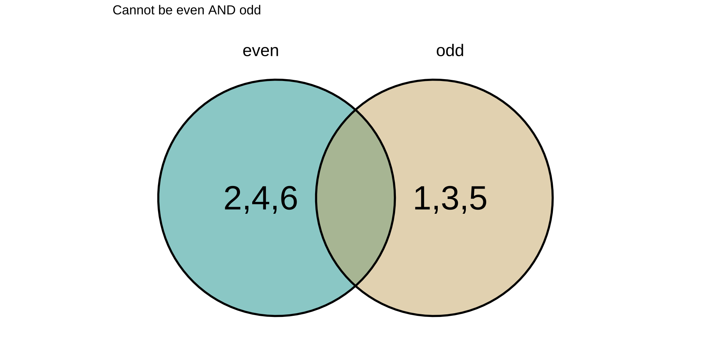
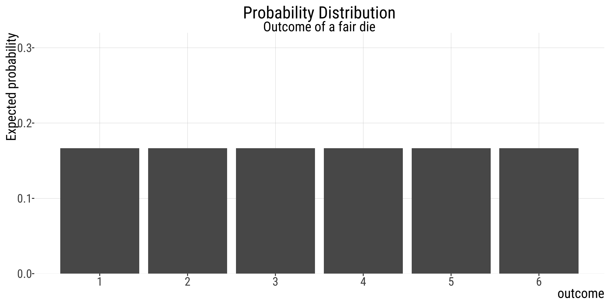
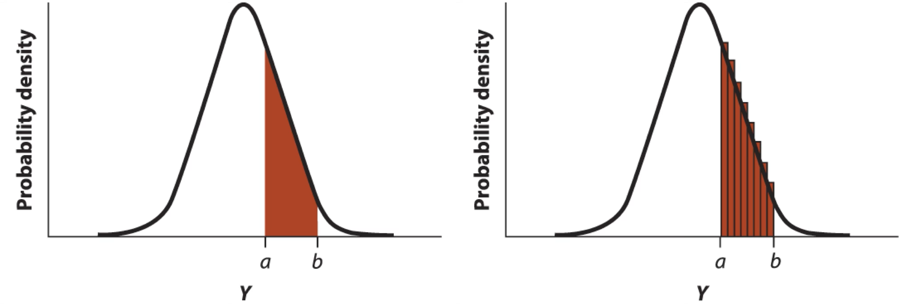

Code

Why study probability?
September 21, 2026
Getting an odd or even number on a die roll.
If and
are mutually exclusive:

E.g., in a die roll
Example: getting an even number that is also a prime number.
If and
are not mutually exclusive:
Probability distributions describe discrete variables.
Probability distributions sum to 1.
All possible values:
Probabilities of particular outcomes:
Sum of probabilities of all possible outcomes:

Area under the curve gives you the probability of values in a range Each value has an an infinitesimal probability value

Special case: if A and B are mutually exclusive, then:
,
so:
What is the probability of a die roll resulting in an even number OR a prime number?
Even numbers: ;
Prime numbers: ;
Even and prime: ;
The probability of “” equals:
the probability of one event times the probability of the other, conditioned on the first.
Read as
“given”
.
Two events are independent if the occurrence of one gives no information about whether the second will occur.
and
are independent if
So the rule becomes:
I.e., if &
are independent, the probability of “
” is simply the product of their probabilities.
Probably of getting even numbers in two consecutive rolls of a die.
Since each trial (roll) is independent, then: